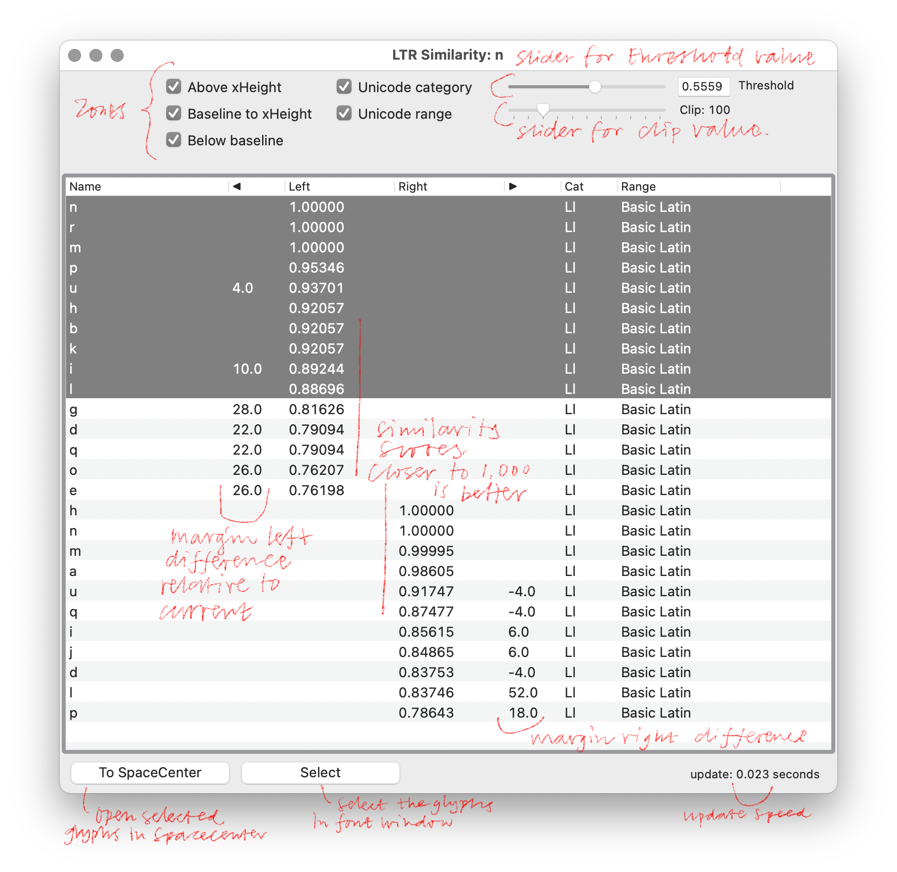

Similarity
Experimental tool for finding similar glyphs

Use
- Open a Glyph window, select Similarity from the extensions menu - this window will appear.
- The columns named Left and Right show the similarity score. You will notice that only values very close to 1 make sense.
- The columns named Category and Range show the Unicode category and Unicode Range name. If selected, the list will only show the glyphs in the same category or range as the current glyph.
- Selecting a glyph in the list will draw that glyph in the background of the current glyph. Selected glyphs that matched on the left are drawn in red. Glyphs that matched on the right are drawn in blue.
- Threshold slider and value: sets a threshold on the similarity score.
- Zone checkboxes: a rough way to control which vertical zones are included in the comparison. So if "Above xHeight" is checked, differences above the xheight will be noticed.
- Double click on a glyph in the list to jump to that glyph in the editor.
How
This works by calculating a profile for each side of each glyph. This might take a noticable amount of time at first, after that the values are stored and only recalculated when a glyph actually changes. Then the cosine similarity can be calculated for different sides in different glyphs. The rest is plain Vanilla UI and some lovely Merz visualisation.
Version
Experimental release 1.0
Thanks
- Lars van Blokland
- Frederik Berlaen
- Tal Leming